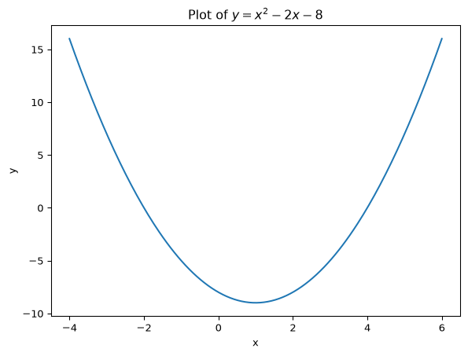
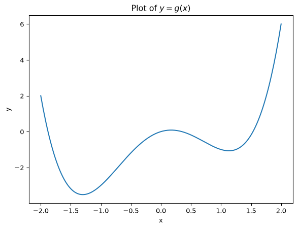
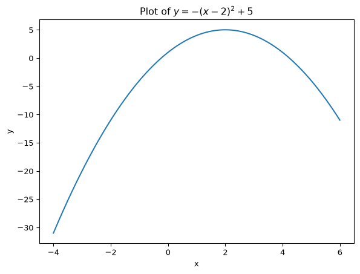

Suppose we want to find the value of x that minimizes this function. One approach is to use analytical methods. We take the first derivative:
f^\prime(x) = -2 +2x
If we find a value of x that sets f^\prime (x)=0, then this value of x is an extreme point of this function. Solving -2+2x=0 for x yields x=1. We can check the sign of the second derivative to see if this is a maximum or minimum:
f^{\prime\prime}(x) = 2
This is positive for all values of x, so x=1 is a minimum of this function.
This all worked and was not too difficult to do. But can Python do this for us? We will see that it can, and it can also do it for more difficult situations where an analytical solution might not be possible. That is what we will learn in this chapter.
10.1 Plotting Approach
One way to find the minimum point is to plot the function and to see visually where the minimum is. To do this we need to first generate values of x and f(x) to make the plot. For the values of x, we want many values between a lower and upper bound that we choose. We will set this to -4 and +6, which we know will be \pm 5 around the function minimum of 1. If you don’t know the minimum in advance, you can just choose some wide range for this bound and change it afterwards.
Let’s generate 20 values of x equally-spaced between -4 and +6. The range is 10. To do this we use a list comprehension:
When i=0, the first value, we get -4. When i=1, we get -4+\frac{10}{19}. When i=19, the last value, we get 5.
The function linspace in numpy does exactly this, so we could alternatively have used that. With this function we specify the lower bound, upper bound and the number of values as the arguments:
Then for all these values of x we calculate the corresponding output of the function, which we will call y. We first define the function f and use a list comprehension:
def f(x):return x**2-2*x -8y = [f(i) for i in x]
Now with this x and y we can make the plot as follows:
import matplotlib.pyplot as pltplt.plot(x, y)plt.xlabel("x")plt.ylabel("y")plt.title("Plot of $y=x^2-2x-8$")
Text(0.5, 1.0, 'Plot of $y=x^2-2x-8$')
From the plot we can see the following that the function achieves a minimum at x=1.
If you look closely at the plot you can see that it is not very smooth and has some kinks in it. This is because we used only 20 values to make it. If you use 200 values, it will be much smoother. Let’s do it again with 200 values:
x = np.linspace(-4, 6, 200)y = [f(i) for i in x]plt.plot(x, y)plt.xlabel("x")plt.ylabel("y")plt.title("Plot of $y=x^2-2x-8$")
Text(0.5, 1.0, 'Plot of $y=x^2-2x-8$')

Now it is much smoother.
10.2 Using Optimization
We will now use Python to find the extreme point using optimization. We can do this using the minimize() function from the module scipy.optimize. When using this function we need to provide an initial guess of where the minimum is.
from scipy.optimize import minimizeresult = minimize(f, x0=0)result
Why do we need to give an initial guess? Sometimes a function can have several local minima. A univariate function has a local minimum at x if f(x+\epsilon)>f(x) and f(x-\epsilon)>f(x) for small \epsilon>0. But there could be another value x^\prime where f(x^\prime)<f(x). A function has a global minimum at x if f(x^\prime)>f(x) for all x^\prime\neq x.
If a function has multiple local minima, the minimize function is not guaranteed to find the global minimum. Given an initial guess it searches for the minimum according to an algorithm starting at your initial guess. If you start the algorithm elsewhere, it may find another minimum. Let’s plot the following function which shows an example of this:
g(x) = x^4 - 3x^2 + x
def g(x):return x**4-3*x**2+ xx = np.linspace(-2, 2, 200)y = [g(i) for i in x]plt.plot(x, y)plt.xlabel("x")plt.ylabel("y")plt.title("Plot of $y=g(x)$")
Text(0.5, 1.0, 'Plot of $y=g(x)$')

We can see that there are two local minima: one near -1.2 (the global minimum) and one near +1.2 (a local minimum). If we use the minimize() function starting at 1, the algorithm stops at the local minimum:
So bad choices of starting values could lead to failing to find the global minimum. Therefore it is good practice to perform minimize from several different starting values. To show how we could do this, we can repeat it 20 times for starting values in the range -10 and +10 and only keep the best one:
Here we initialize best_result = None. In first iteration, best_result = None, so the if statement updates best_result to the first result. Then for following results it only updates best_result if the function value from the result is lower than the current best one.
10.2.2 Maximizing a Function
If instead of minimizing a function you want to maximize it instead, you will still use the minimize function from scipy.optimize. The only thing you will do differently is that you will minimize the negative of the output of the function, which is the same as maximizing it. Essentially making the output of a function negative flips it upside down and turns a maximization problem into a minimization problem. Let’s see an example:
def h(x):return-(x -2)**2+5x = np.linspace(-4, 6, 200)y = [h(i) for i in x]plt.plot(x, y)plt.xlabel("x")plt.ylabel("y")plt.title("Plot of $y=-(x-2)^2 + 5$")
Text(0.5, 1.0, 'Plot of $y=-(x-2)^2 + 5$')

This function has a maximum at x=2.
To find the maximum, we use a lambda function to turn the output negative and find the minimum:
Note that the result shows the function value at the optimum being -5, whereas the plot of the function shows it at +5. This is because we are minimizing -h(x), so the function output has its sign flipped.